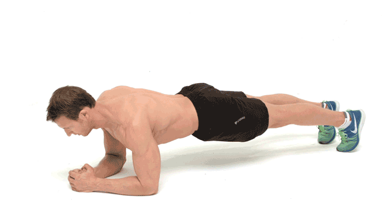

5-10 minutos de saltos de tijera (Jumping Jacks) y rotaciones de brazos.
Técnica: Pies a la anchura de los hombros, baja flexionando rodillas hasta que tus muslos estén paralelos al suelo.
Técnica: Manos ligeramente más anchas que los hombros, baja el pecho hasta casi tocar el suelo y sube.
Técnica: Mantén el cuerpo en línea recta desde la cabeza hasta los talones.
Técnica: En posición de plancha, lleva una rodilla hacia el pecho de forma alternada y rápida.
Descanso: 60 segundos entre rondas.
5-10 minutos de estiramientos de cuerpo completo.